DoSA: Dots Sparse Attention Making "find the Top-K" a computation that can itself be skipped
Sparse attention visits only a few keys, but finding those keys still scores every key with every indexer head. DoSA's central observation is that Top-K selection needs sufficient evidence to reject a candidate, not that candidate's full score. The paper builds a score upper-bound certificate tailored to a signed ReLU multihead score, and turns all-head scoring into conditional computation without changing the final selected set.
*Equal contribution; author order was determined by a coin toss. †Corresponding author.
01 · Overview
Overview
The question this paper answers is very specific: inside a DeepSeek Sparse Attention (DSA)-style "multihead indexer + Top-K" sparse attention, can we be certain we have not missed a token that should have been selected, without computing all the scores? The authors' answer is yes — as long as we build, for each candidate key, an upper bound $U_i$ that is strictly no lower than its true score, and a lower bound $\tau$ that is strictly no higher than the true Top-K threshold (supplied by a seed set). Once the two separate ($U_i < \tau$), that key is proven unable to enter the Top-K and can be safely discarded. Throughout, the tokens finally selected are identical to full scoring, which is why the paper calls the method lossless.
Core mechanism
Score upper-bound certificate + fixed seed thresholdThe certificate rejects candidates; the seed supplies the lower bound; ties are always retained
Selection correctness
Exact Top-K (Theorem 1)Returns the same Top-K as full scoring (identical under a common total order)
Indexer microbenchmark speedup
up to 2.74× / 1.69×Over SGLang and LiteTopK; fastest in 60/60 configurations
End-to-end TTFT
1.86× / 1.94×GLM-5.2 and DeepSeek-V3.2, ~1M-token inputs, over SGLang
Pruning rate
97.2%–97.5%Domain average; 20 of 21 layers above 95%
Model configuration
32 / 64 heads, Top-K = 2048GLM-5.2 / DeepSeek-V3.2; both have 21 indexer-producing layers
Reading conventions: every number on this page follows the paper; anything this page organizes, summarizes, or converts from the paper's configuration is explicitly marked [organized] or [estimated], so it can be told apart from the paper's own figures. Notation follows the paper: $H$ is the number of indexer heads, $r$ the number of retained heads evaluated directly, $K$ the Top-K budget (2,048 in the experiments), $\Omega$ the set of visible keys, and $[x]_+ = \max(x,0)$. The "Report p.X" at the end of each caption gives that figure's page in the original PDF.
Let us lay out the paper's four contributions, which map onto the four chapters that follow: (1) the certificate (chapters ③④) — a per-key upper bound designed specifically for the signed DSA score, rather than a lifted block-max bound from document retrieval; (2) the analysis (chapters ④⑦) — connecting the certificate's slack $\delta_i$ to the selection margin $\Delta_i$ and the head budget $r$, answering "when is this certificate useful, and is one more head worth it"; (3) the system (chapter ⑤) — translating "certified rejection" into genuinely saved compute and memory traffic, not just fewer multiply-accumulates; (4) the measurements (chapter ⑥) — three domains (English/Chinese/code), 60 microbenchmark configurations, and TTFT on two real models.
One-sentence summary: DoSA moves WAND/MaxScore-style upper-bound pruning from document retrieval onto the indexer of an LLM sparse attention — but does something retrieval never had to do: make the upper bound fit a multihead reduction with ReLU inside and weights of both signs. Positive heads are covered by "project onto an already-computed head + a residual norm", negative heads by "a single aggregate direction chosen by activation pattern", plus a GPU implementation that turns pruning into real bandwidth savings.
02 · Background
Background: the "dense scoring" bottleneck inside sparse attention
Sparse attention lets each query look at only a few keys, so the complexity looks like it has come down. But the step that decides which keys to look at is, in DSA, performed by an indexer with $H$ heads: each head computes a dot product between the query and the key, passes it through a ReLU, and the results are combined with a signed weighted sum, after which the $K$ highest scores are taken. The paper writes this as:
Here $q_h \in \mathbb{R}^D$ is the query vector of head $h$, $w_h \in \mathbb{R}$ its weight, and $k_i$ the key of token $i$. Two details matter and will recur constantly: the ReLU sits inside the weighted sum (so it is "rectify first, then sum with signs"), and the weights $w_h$ have both signs. Exactly these two facts make "just compute fewer heads" unsafe — dropping a positive head underestimates the score, dropping a negative head overestimates it.
A structural contradiction follows: $s_i$ is used sparsely (only $K$ keys are eventually attended), but the process that produces $s_i$ is dense — every visible key must be scored by all $H$ heads. The paper quantifies this on real models:
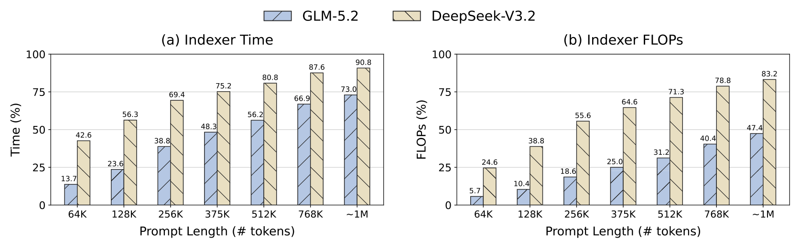
Figure 1: The indexer becomes a dominant cost of long-context prefill. Left: its fraction of prefill GPU time, including query/key preparation, scoring, and Top-K. Right: its fraction of theoretical matrix FLOPs. Each point averages two requests under SGLang; profiling and FLOP conventions are given in Appendix D.1.
Reading note: the left panel is the indexer's share of prefill GPU time; the right panel its share of theoretical matrix FLOPs. The two bar series are GLM-5.2 (blue) and DeepSeek-V3.2 (tan). Point by point: at about 1M tokens the indexer accounts for 73.0% of GLM-5.2's prefill GPU time and 90.8% of DeepSeek-V3.2's, while the corresponding FLOPs shares are only 47.4% and 83.2%. Reading the two panels side by side is the point: the time share is clearly higher than the arithmetic share (73.0% vs 47.4% on GLM-5.2), which says the indexer's cost is not only "more arithmetic" but also the memory traffic of Top-K selection and of reading/writing intermediate results — precisely why DoSA, beyond computing fewer dot products, also cuts writeback and selection work. Both curves rise monotonically with length, foreshadowing the Amdahl-style conclusion: the longer the context, the more accelerating the indexer is worth.Report p.2
💡 Click any image to view the full-resolution original; click again or press Esc to close.
The three existing acceleration routes, and the gap they all leave open
The paper sorts related work into three families and points out where each one leaves a gap:
Predictive / reusable sparse selection: NSA combines token compression with fine-grained selection (Yuan et al., 2025), MoBA uses expert routing for block attention (Lu et al., 2025), and DSA selects tokens with a learned multihead indexer (DeepSeek-AI, 2025); IndexCache reuses indices across layers (Bai et al., 2026), SparDA predicts next-layer selections (Fu et al., 2026), HISA uses hierarchical block indexing with token refinement (Xu et al., 2026), PIVOT shares proxy scans across query groups (Liu et al., 2026), and MISA screens with fewer heads and reranks with the full indexer (Zhou et al., 2026). The paper's verdict: these methods need not preserve the original scorer's Top-K, and reranking cannot recover an already-excluded winner.
Exact GPU selection and fused scoring: radix selection narrows candidates with successive digit histograms (Zhang et al., 2023), GVR predicts a decoding threshold from temporal correlation (Cheng et al., 2026), DeepSelect streams materialized scores through a bounded buffer (Qian et al., 2026), and LiteTopK fuses full-head scoring with online candidate filtering (Yin et al., 2026). These accelerate Top-K selection itself, but still rely on full-head scores for every key.
Score upper bounds from classical document retrieval: MaxScore (Turtle & Flood, 1995) and WAND (Broder et al., 2003) use term-contribution upper bounds plus a running Top-K threshold to skip unnecessary document scoring, and Block-Max WAND tightens these bounds for individual posting-list blocks (Ding & Suel, 2011). The paper stakes out its own position here: a block-level upper bound must cover every key in the block and can therefore be loose for individual candidates, which motivates tighter, per-key bounds that exploit query-head geometry and activation structure.
Stating the gap precisely: the first family trades away "consistency with the original scorer" for speed; the second keeps correctness but does not reduce the scoring work itself; the third has the right principle, but its bound form (block-level) is not tight enough in the LLM-indexer setting. DoSA wants both the original scorer's exact Top-K and fewer computed scores, so it has to invent a new kind of bound. That is where the paper's self-posed question comes from: Can we avoid full-score computation while certifying that screening discards no winner?
03 · Key Observation
Observation: rejecting a candidate does not need its full score
The starting point is a plain but often overlooked sentence: "entering the Top-K" is an event that can be refuted by contradiction. To prove that some key cannot be selected, we do not need to know its score — only an upper limit on how high it could be, together with the fact that this upper bound already falls below the qualification line. Formally, choose a seed set $S \subseteq \Omega$ of at least $K$ visible keys and use the original scorer to compute their $K$th largest score $\tau = \tau_K(S)$. Because $S$ is only a subset of $\Omega$, its $K$th largest score cannot be higher than the full set's:
This gives two quantities pointing in opposite directions: $\tau_K(S)$ is a lower bound on the true threshold (the better the seed, the tighter), and $U_i$ is an upper bound on the token score (the tighter the certificate, the better). Their strict separation completes one certified rejection. The paper flags two engineering facts at the same time: a poor seed weakens filtering; and additional exact scores can only raise the threshold lower bound — that is, knowing more is always safer, and never causes a winner to be missed.
Why retaining only some heads is not enough
The most natural way to "save money" is to compute only a subset of heads. The paper closes that door in one paragraph, and it is worth following verbatim: dropping positive-weight heads is unsafe (it underestimates the score and kills a key that should have been selected), while dropping negative-weight heads is safe but leaves loose bounds (negative heads subtract, so ignoring them only raises the upper bound). So DoSA's strategy is not "drop some heads" but "evaluate some heads exactly, and build bounds for the rest".
Concretely, let $R$ be a set of $1 \le r < H$ retained heads. Their contribution is computed exactly:
The remaining heads split into two groups: $P = H_+ \setminus R$ (omitted positive heads, needing an upper bound) and $N = H_- \setminus R$ (omitted negative heads, whose subtracted magnitude needs a lower bound). How $R$ is chosen follows a rule that depends on activation frequency (see the next chapter), but the authors stress one crucial point: the theorem holds for any $R$; the choice of $R$ affects only efficiency and tightness, never correctness. This decoupling of correctness from heuristics is the foundation of the paper's credibility.
A practical problem for "tighten as you scan": the threshold must be fixed
In classical retrieval the threshold can be raised as documents are seen, tightening as the scan proceeds. DSA is different: candidates are scanned block by block, and if the threshold changed mid-scan, keys already rejected under the old threshold could not be recovered. The paper therefore chooses a fixed threshold: once the seed set fixes $\tau$, it never changes through the screening and refinement stages (Algorithm 1). This trade sacrifices some potential tightness in exchange for provable correctness that is independent of scan order. Appendix B.3 writes the size of that trade as an equality: rejection needs $\Delta_i > \delta_i + b$, where $b = \tau^* - \tau \ge 0$ is exactly the "debt" of a fixed threshold (the gap between the threshold lower bound and the true threshold) and $\delta_i = U_i - s_i$ is the certificate slack. This formula puts "seed quality" and "certificate tightness" — two independent directions for improvement — cleanly on the two sides of one inequality.
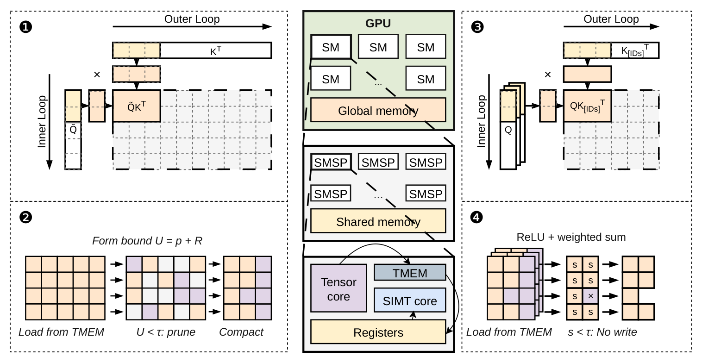
Figure 2: DoSA execution overview, read in order ❶–❹: ❶ screening dot products; ❷ bound evaluation, pruning, and candidate compaction; ❸ full-head dot products for survivors; ❹ original-score reduction and sparse writeback. Tensor Cores execute stages ❶ and ❸; SIMT threads execute stages ❷ and ❹ using accumulators from Tensor Memory (TMEM), with gray and purple data tiles indicating avoided computation and writeback, respectively. The center sketches GPU resources; seed initialization and final Top-K selection are omitted.
Reading note: this figure is meant to be read by its ❶–❹ labels, and it doubles as the roadmap for chapter ⑤'s GPU design. ❶ screening dot products: tensor-core matrix multiplies between the $(r+d_a)$-row $\tilde{Q}$ and key tiles — note it is $r+d_a$ rows, not $H$ rows, and that is where the saving comes from. ❷ bound evaluation, pruning, candidate compaction: the accumulators in TMEM produce $U = p + R$, keys with $U < \tau$ are dropped, and survivor IDs are compacted. ❸ full-head dot products for survivors: only surviving keys are multiplied against the full $Q$ and $K[\mathrm{IDs}]^\top$; the gray blocks are exactly "computation certified away". ❹ original-score reduction and sparse writeback: ReLU plus the signed weighted sum of Eq. (1), writing out only records with $s \ge \tau$; the purple blocks are "writeback avoided". The two savings colors (gray = compute, purple = bandwidth) are the page's visual thread: what DoSA saves was never only FLOPs.Report p.3
Takeaway from this chapter: the certificate's correctness needs only one inequality — the upper bound is not too low and the lower bound is not too high — and is independent of how retained heads are chosen and how the threshold is set. What is genuinely hard in engineering is making that inequality both tight and cheap, and turning "compute less" into "actually save". The former is the next chapter (the certificate); the latter is chapter ⑤ (the system).
04 · Method
Method: an upper-bound certificate for a signed multihead score
Now comes the paper's central technical problem: given a score of the form in Eq. (1) — ReLU inside, weights of both signs — how do we build a cheap yet tight upper bound $U_i \ge s_i$ for every key? The paper handles positive and negative heads separately, producing two tools with different characters.
4.1 Omitted positive heads: project onto an already-computed head, cover the rest with a residual norm
For each omitted positive head $h \in P$, the paper picks an anchor $j_h^\star$ from the retained set $R$ and splits $q_h$ into "a component along the anchor plus a residual":
This inequality deserves a pause, because it explains both "why cheap" and "why tight": the first term on the right reuses a retained dot product that has already been computed (so the projected part is free), and the second term depends only on the query-side $d_h$ and the key-side $\lVert k_i \rVert_2$ — and $\lVert k_i \rVert_2$ is computed once per key and shared across all positive heads. In other words, the omitted positive heads do not vanish; they are folded into a single residual allowance.
Summing the contributions of all omitted positive heads defines folded weights and a total residual allowance:
So "retained heads + omitted positive heads" as a whole are covered by $ \sum_{j \in R} \tilde{w}_j [q_j^\top k_i]_+ + E_P \lVert k_i \rVert_2 $. One engineering detail is easy to misread: $\tilde{w}_j$ are folded weights that live only inside the screening plan and do not modify model parameters. If $P$ is empty (all positive heads retained), then $E_P = 0$ and $\tilde{w}_j = w_j$, degenerating to exact computation.
4.2 Why the nonnegative projection is the optimal single anchor
Appendix B.1 (Proposition 5) answers a natural question: is this choice of anchor and $\beta$ optimal? The answer is yes — among all single-anchor bounds of the form $[q^\top k]_+ \le \beta [p^\top k]_+ + c\lVert k \rVert_2$, the smallest achievable uniform allowance is $c^\star = \min_{\beta \ge 0} \lVert q - \beta p \rVert_2$, i.e. the distance from $q$ to the nonnegative ray generated by $p$, and the values in Eq. (4) attain it.
The proof itself is elegant and worth one line: if $q^\top p \le 0$, substituting $k = q/\lVert q \rVert_2$ makes the anchor term vanish for every $\beta \ge 0$, so $c \ge \lVert q \rVert_2 = c^\star$; otherwise let $d = q - \beta^\star p$, whose projection satisfies $d^\top p = 0$, and substituting $k = d / \lVert d \rVert_2$ again kills the anchor term while the left side equals $\lVert d \rVert_2$, so $c \ge c^\star$. The paper is also honest about the boundary: what is optimized is the uniform norm allowance, not the pointwise-optimal complete bound, and not the optimal choice of the retained-head set.
Two tighter upgrade routes exist (Appendix A.1); the paper gives them but keeps the simpler one on the main path: (a) Grouped residuals — split coordinates into $G$ groups, give each its own residual norm $E_{P,g}$, then combine with Minkowski into $\big(\sum_g E_{P,g}^2\big)^{1/2}\lVert k_i \rVert_2$. By Minkowski it is $\le E_P$, i.e. strictly tighter at unchanged cost (still one RMS value per key). (b) Joint residual — exploiting correlations among residual directions, Eq. (7) gives $E_P^{\text{joint}} = \frac{1}{2}\big(\lVert \sum_h u_h \rVert_2 + \sqrt{\sum_{h,\ell} |u_h^\top u_\ell|}\big) \le E_P$, with $u_h = w_h d_h$. Its gain comes from residual geometry and it needs no extra key reads, but its query-side cost is quadratic in the number of omitted positive heads — so the paper treats it as an optional tightening rather than the default path.
4.3 Omitted negative heads: aggregate along a direction decided by the activation pattern
The negative side is the most interesting design in the paper, and ablation shows it is the single most critical piece. Negative heads subtract, so to build a score upper bound we must find a lower bound on the subtracted magnitude. The paper picks a subset $A \subseteq N$ to define an aggregate direction:
By ReLU subadditivity, $L_N$ never exceeds what the omitted negative heads actually subtract, so it is safe. The paper then asks a sharp question: why not simply put every negative head into $A$? The answer is a counterintuitive but important insight — a head that is itself inactive (negative dot product, zero after ReLU) can, through its negative dot product, cancel other active heads' positive dot products before the aggregate ReLU, which underestimates the subtracted magnitude and loosens the upper bound. So "adding one more head" is not monotonically better.
DoSA solves this using the activation pattern of seed keys: for sampled seed keys record $M_i = \{h \in N : q_h^\top k_i > 0\}$, let $p_h$ be head $h$'s activation frequency, and take componentwise majority support:
$$A = \{\, h \in N : p_h \ge 1/2 \,\}$$
The paper proves this is principled rather than ad hoc: define the separable surrogate $J(A) = \sum_{h \in A} a_h (1 - p_h) + \sum_{h \in N \setminus A} a_h p_h$ (with $a_h = |w_h|\lVert q_h \rVert_2$). If the sampling mask uses the signs of the same real dot products, then $J(A)$ upper-bounds the sample mean of $\delta_N(k)/\lVert k \rVert_2$; since each head independently picks between $a_h(1-p_h)$ and $a_h p_h$, componentwise majority exactly minimizes $J$, with minimum $\sum_h a_h \min(p_h, 1-p_h)$. Meanwhile the retained-head rule from before uses the very same $\min(p_h, 1-p_h)$ as its priority, which removes the largest of the remaining terms — so "which negative heads to retain" and "which to aggregate" are two decisions under one surrogate objective.
There is also a neat boundary case: if a new key's active set is exactly $A$, the aggregate is exact (both slack terms vanish); other activation patterns stay safe, just with a looser bound. Frequency affects efficiency, not correctness — worth remembering, because it means noisy activation statistics cannot break losslessness.
4.4 Putting it together: the final form of $U$, and where each term's slack comes from
Combining Eqs. (5)–(8) yields the paper's score certificate:
where $c_h = |w_h|$, $x_h = q_h^\top k$, and $Z_A^\pm$ are the positive and negative contributions inside the aggregate heads. The physical meanings of the three blocks are: (i) the price paid for approximating positive heads by projection; (ii) negative heads that really are active but were not taken into $A$ (subtracted less than they should be); (iii) the loss from positive and negative terms cancelling inside the aggregate. This decomposition explains why negative aggregation is irreplaceable: in the ablation, removing it sends candidate survival from 2.65% to 95.06% (details in the next chapter) — because without it, term (ii) pushes the upper bound up until it is nearly useless.
4.5 Walkthrough: putting the paper's configuration onto layers, heads, and tensors
After the abstract mechanism, it is worth a "configuration walkthrough" to see what the formula looks like in a real model. All numbers below come from the paper's main text and appendices; rows marked [organized] are this page's sums or conversions from the paper's configuration:
DoSA configuration walkthrough (data from the paper's §2.5, §4.1 and Appendices C.1, D.2; [organized] marks converted results)
The 32 heads split into "retained $r$ + omitted positive + omitted negative"; the retained count $r$ is a tunable budget
Implementation paths for $r$
Paper §2.5 and Appendix C.1: three paths, $r = 14, 16, 20$
$r = 14,16$ use the absolute-value form (all positive heads retained, $P = \varnothing$); $r = 20$ uses the base form and keeps positive-head projection
Auxiliary rows $d_a$
Two FP8 auxiliary rows $v_0, v_1$ approximate the negative aggregate ($a_A \approx v_0 + v_1 + e_A$)
[organized]: the logical dot-product rows per screening request are $r + 2$, not $H = 32$; at $r = 14$ that is 16 rows, about 50% of all heads
Per-key screening cost
The normalized work model of Eq. (20)
[organized]: screening saves logical dot products only when $m < 1 - (r + d_a)/H$ ($m = M/N_s$ is the survival rate); with $r = 14$, $d_a = 2$, $H = 32$ the threshold is about $m < 0.5$ — while measured survival is only 2.65%, a very large margin
Measured pruning rate
20 of 21 layers above 95%, domain average 97.2%–97.5%; layer 1 lowest at 89%–93%
[organized]: that corresponds to a survival rate of roughly 2.5%–2.8%, consistent with the 2.65% in Appendix D.2
The certificate must still hold in FP8/FP32, which needs an upward-enclosing evaluation, a conservative key RMS summary $\rho_i$, and rounding errors made explicit as tolerance terms
Takeaway from this chapter: positive-head projection handles "omitting positive heads underestimates"; negative-head aggregation handles "omitting negative heads overestimates". Both have the same structure — per-key, precomputed on the query side, shared across keys — which is exactly why the bound is tighter than block-level bounds yet cheaper than scoring everything. And Proposition 6's three-term slack decomposition previews the ablation result: negative aggregation is this certificate's lifeline.
05 · GPU Kernel Design
System: turning the certificate into a four-stage GPU pipeline
The certificate only guarantees "less arithmetic", but on a GPU "less arithmetic" does not automatically mean "faster". The paper names this trap right at the start: certified pruning reduces arithmetic, but irregular survivor sets can limit GPU utilization and introduce scattered key accesses. Chapter ③ therefore uses three concrete design decisions to translate the certificate into real benefit.
5.1 Design one: group queries so screening can use dense tensor cores
The first decision is "grouping + pipelining".
Group by retained-head budget: queries with similar retained-head budgets are packed into fixed-width tiles, so a small set of screening kernels can use dense tensor-core MMA, avoiding the fragmentation of a custom width per query.
Prepare query-side data once: retained query rows, folded weights $\tilde{w}_j$, and the two FP8 auxiliary rows are prepared once and reused across all key tiles — the concrete realization of chapter ③'s repeated "query-side quantities are reused across keys".
Threshold fixed during the scan: each query's threshold is initialized from the exact scores of seed keys and never changes during the scan (consistent with chapter ③'s fixed-threshold trade).
Producer/consumer split: dedicated warps issue asynchronous key loads and MMA operations, while consumer warps evaluate bounds from TMEM accumulators; buffered key tiles overlap loading with computation. A key is rejected only when $U_i^{\mathrm{num}} < \tau$, and warp ballots pack survivor decisions into a compact mask for refinement.
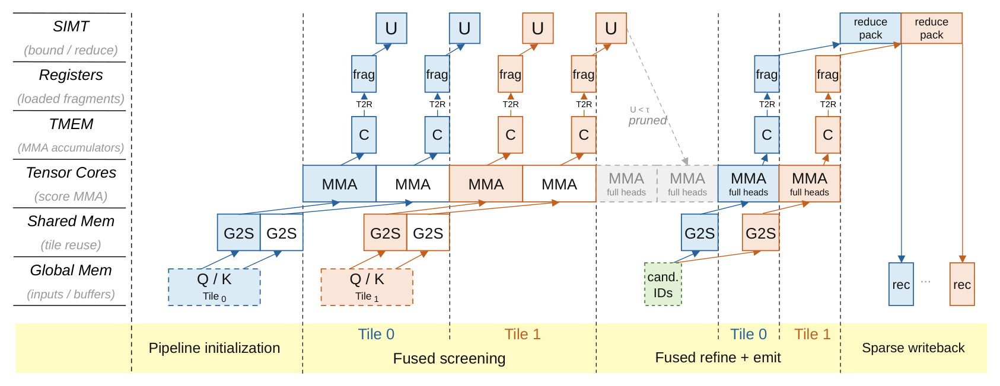
Figure 3: Data flow through screening, refinement, and sparse writeback. Blue and orange illustrate successive tiles within each stage, where key loading overlaps computation. SIMT threads evaluate bounds U from TMEM accumulators; gray full-head MMA blocks indicate work avoided through certified pruning. Compacted candidate IDs feed refinement, whose outputs are filtered before writeback. G2S and T2R denote global-to-shared and TMEM-to-register transfers.
Reading note: this swim-lane diagram spreads Figure 2's four stages out into "where the data flows". Vertically it follows the hardware hierarchy: SIMT (bound evaluation / reduction) → Registers (fragments) → TMEM (MMA accumulators) → Tensor Cores (scoring MMA) → Shared Memory (tile reuse) → Global Memory (inputs and buffers). Horizontally it splits into three segments: Pipeline initialization (exchanging Q/K tiles), Fused screening (the blue and orange colors are two successive key tiles within the same stage, showing load/compute overlap), and Fused refine + emit. The key reading is on the Tensor Cores row: after U < τ pruned appears during screening, the following MMA full heads blocks are shaded gray — that is the full-head computation certified away; the Sparse writeback at bottom right lets only candidates passing the threshold into the candidate-ID buffer. G2S/T2R mark global→shared and TMEM→register moves, a reminder that half of this design's optimization target is data movement, not arithmetic.Report p.5
5.2 Design two: sharing key loads during refinement
The second decision targets "irregular accesses". If every query gathers its own selected keys, then a key selected by several queries is loaded repeatedly. The paper's approach compacts the survivor masks into a shared stream plus per-query streams: within a group of four queries, a key that survives at least two bounds and lies in the group's common visible range enters the shared stream (one load serves full-head scoring for the whole group); other candidates use per-query streams. The paper openly admits this is a trade — it "trades some extra query–key evaluations for fewer key transfers". The trade works because at long context, moving keys (bandwidth) is often more expensive than a few extra dot products, echoing Figure 1's observation that the time share exceeds the arithmetic share. Each score is still filtered against its own query's threshold, so the extracted result is unchanged.
5.3 Design three: compact writeback and exact selection
The third decision targets "writeback and selection". Refinement fuses full-score computation with threshold filtering: only records with $s_i^{\mathrm{ref}} \ge \tau$ produce output. These records store compact monotone score codes with exact key IDs, reducing both HBM traffic and the selection stage's input size. Selection then keeps records strictly above the boundary code, and candidates falling exactly on the boundary are resolved one by one using their original scores. This "handle the boundary separately" detail is a necessary condition for losslessness — it guarantees that Theorem 1's requirement that both filters retain equality really is honored at the implementation level.
5.4 Decoding: a different approach
Prefill has many queries, so the certificate's preparation cost can be amortized across query groups. Decoding has very few queries per step and very limited key reuse across query groups, so the same benefit structure no longer holds. The paper changes tack here: it keeps full FP8 scoring and instead exploits temporal coherence. Distinct keys selected in recent steps provide witnesses whose scores on the current query yield a conservative lower bound on the Top-K threshold; scores at or above this bound are compacted for exact selection, and the witness set and selected indices are updated. So the decoding-stage gain comes from reducing selection work, not from reducing scoring — which explains why Figure 5's decoding speedups (1.06×–1.26×) are far smaller than the prefill speedups.
The accompanying numerical engineering (Appendix C): for the certificate to hold on real hardware, FP8/FP32 rounding error must be made explicit as tolerance. The paper gives Eq. (26), $U_i^{\mathrm{num}} = \mathrm{Eval}^{\uparrow}[\alpha_i(\hat{U}_i + \rho_i C) + \varepsilon_{\text{raw}} + \varepsilon_{\text{out}}]$, and stresses three points: (1) an upward-enclosing evaluation is required (directed rounding or explicit error bounds); "round-to-nearest alone is insufficient". (2) the conservative key RMS summary must satisfy $\rho_i \sqrt{D} \ge \lVert \bar{k}_i \rVert_2$; a nearest-rounded RMS is not enough. (3) once a non-finite value appears or coverage cannot be established, the certificate is invalid and the query stays flagged until full-domain recovery — re-evaluating the original scorer and selector over all visible keys, including those discarded before the error was detected. The paper warns explicitly: "re-selecting from an incomplete buffer is insufficient." This section reads like an engineering contract; it marks the distance between "lossless in mathematics" and "lossless on floating-point hardware".
06 · Experiments
Experiments: from microbenchmarks to end-to-end TTFT
Let us set up the experimental bench first, so the numbers are easier to read. The paper evaluates GLM-5.2 (32 indexer heads) and DeepSeek-V3.2 (64 heads) on NVIDIA GPUs, both with Top-K = 2048; microbenchmarks run GLM-5.2 on a single GPU, and end-to-end inference uses eight-way tensor parallelism (TP8) with prefill chunks of 32K (GLM-5.2) and 16K (DeepSeek-V3.2). Workloads come from InfiniteBench's English/Chinese books and code, supplemented with Project Gutenberg and SQLite source code to reach long contexts; per domain, samples are selected by tokenized length and contiguous contexts between 128K and about 1M tokens are extracted. Baselines are SGLang v0.5.18 (full multihead scoring + Top-K) and LiteTopK (fusing scoring, candidate filtering, and selection). Timing uses CUDA events after warmup; end-to-end is measured by TTFT, clearing the prefix cache between requests.
6.1 Prefill microbenchmarks: fastest in all 60 configurations, and the gap widens with length
The microbenchmark sweeps five context lengths (128K/256K/512K/768K/1M) × four chunk sizes (4K/8K/16K/32K), 60 configurations in total. Each configuration replays the final query chunk across all 21 indexer layers, including query/key preparation in the measured latency — an important detail, since the certificate's preparation cost is a real cost and must not be hidden outside the timer.
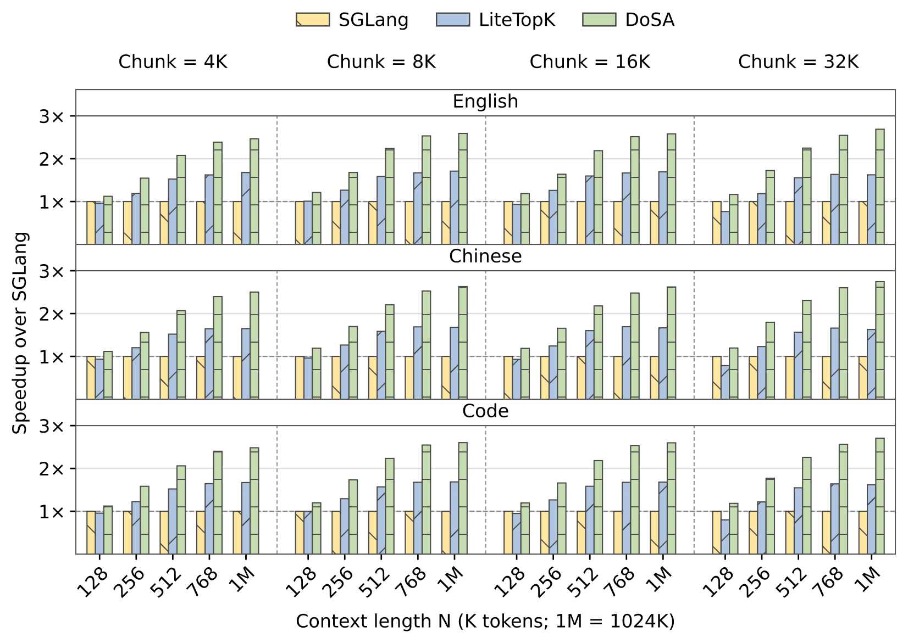
Figure 4: Complete-Indexer speedup over SGLang across context lengths, input domains, and prefill chunk sizes.
Reading note: the vertical axis is speedup over SGLang (so SGLang and LiteTopK themselves sit at the 1× baseline), the horizontal axis is context length (128K–1M), the three rows are the English/Chinese/code domains, and the four columns are the 4K/8K/16K/32K chunks. Two things matter most when reading it. (1) The green bars (DoSA) are tallest in all 60 configurations: speedups over SGLang range from 1.12×–2.74×, and at 512K and above every configuration is above 2×; over LiteTopK the range is 1.17×–1.69×. At 1M the gains reach 2.47×–2.74× (vs SGLang) and 1.47×–1.69× (vs LiteTopK). (2) The shape is "rising with length, flat with chunk": the paper's explanation is that longer contexts enlarge the key set each query must evaluate while the certificate's preparation is reused; enlarging the chunk merely enlarges the query batch, which moves all methods in the same direction. The paper summarizes this neatly: DoSA's main gain comes from cutting work along the "long key dimension". The comparison with LiteTopK also separates two kinds of benefit: LiteTopK already removes score writeback and selection input, but leaves full multihead computation untouched, and that is exactly the block DoSA dismantles.Report p.6
The paper also runs a very concrete sensitivity comparison worth noting separately: for English inputs with 16K queries, speedup rises from 1.19× at 128K to 2.58× at 1M; whereas at 1M, enlarging the query chunk from 4K to 32K (an eightfold increase) moves speedup only from 2.47× to 2.69×. One variable buys a 2.2× increase, the other moves eightfold and buys about 0.2× — a clean demonstration that the benefit comes from diluting work along the key dimension.
6.2 Pruning rate: how much does the certificate actually reject
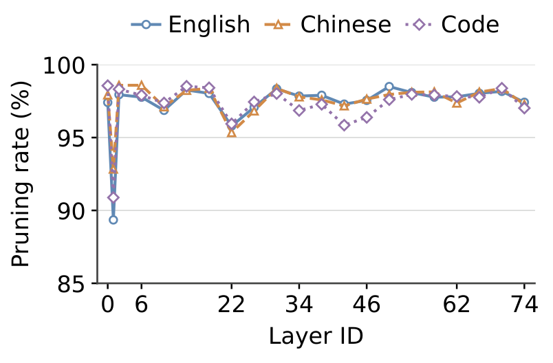
Figure 6: Certificate pruning rates across GLM-5.2 layers, averaged within each input domain.
Reading note: pruning rate here is defined as $p = 1 - N_{\text{keep}}/N_{\text{screen}}$, the ratio of query–key pairs before and after certificate screening. Across the 21 layers, 20 of them exceed 95% on all three curves (English/Chinese/code), with domain averages of 97.2%–97.5%. Most striking is that the three domains' curves almost coincide: all show a clear dip at layer 1 (89%–93%, i.e. nearly nine tenths of pairs still rejected) and exceed 95% everywhere else. The paper's conclusion is that what governs pruning is the layer's score geometry, not the language or modality of the input — a stronger and more informative claim than "we are fast in three domains". In the language of Appendix B.3, for most keys the selection margin $\Delta_i$ to the Top-K boundary is large enough that even with certificate slack $\delta_i$ and threshold deficit $b$, $\Delta_i > \delta_i + b$ still holds.Report p.7
6.3 Decoding: the gain comes from selection, not scoring
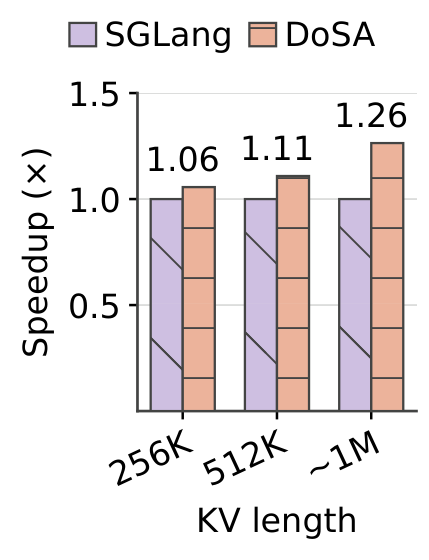
Figure 5: Decoding Indexer speedup over SGLang.
Reading note: the workloads are document-analysis requests built from HELMET, InfiniteBench, and LongBench v2, plus code-review requests from SQLite; each workload fills a KV cache of about 1M tokens with equal-length requests. At request lengths of 256K / 512K / about 1M, DoSA's decoding-Indexer speedups are 1.06× / 1.11× / 1.26×. These numbers are far more modest than prefill's, for the reason already given in chapter ⑤: decoding has too few queries per step for much key reuse across query groups, so in decoding DoSA does not save scoring, only selection work (using keys selected in recent steps as witnesses to derive a conservative threshold and compact records). Setting this beside prefill's 2.74× pinpoints the precondition of the paper's benefit structure: batching and reuse on the query side.Report p.7
6.4 Ablation: how much do screening and sparse writeback each contribute
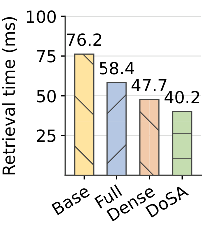
Figure 7: Screening and sparse writeback ablation.
Reading note: the four configurations are Base (neither enabled), Full (sparse writeback only), Dense (screening only), and DoSA (both). The workload is a SciFact retrieval example from LOFT, with 16K queries × 896K keys, averaging retrieval latency across all 21 indexer-producing layers. Bar by bar: 76.2 ms (Base) → 58.4 ms (Full, −23.4%) → 47.7 ms (Dense, −37.4%) → 40.2 ms (DoSA, −47.3%), i.e. 1.90× over Base. The cross comparisons are more telling: adding screening on top of Full saves a further 31.1%, and adding sparse writeback on top of Dense saves a further 15.7%. The paper's reading: Full avoids dense writeback but still pays for every head, and its remaining gap to DoSA exposes the computation fusion alone cannot remove; Dense is the mirror image — fewer scores computed, but dense intermediate results still consume HBM bandwidth. The conclusion: pruning must be paired with a matching execution strategy to realize its benefit.Report p.7
6.5 Certificate-component ablation: which piece is the lifeline
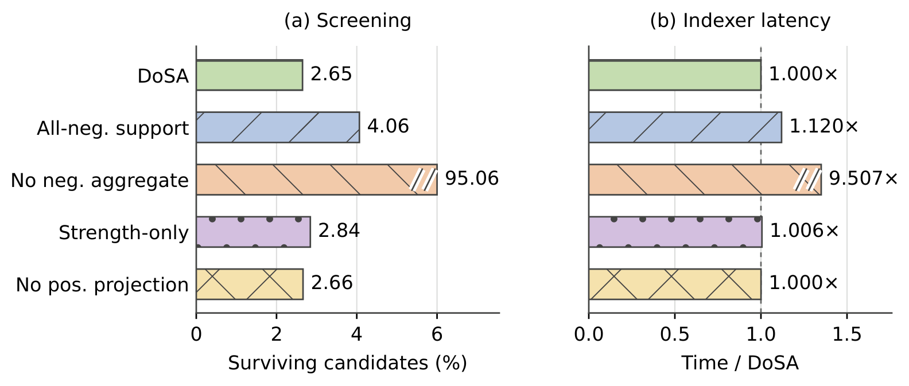
Figure 9: Effects of certificate components on screening and Indexer latency. Bars show the mean candidate survival rate and geometric mean latency relative to DoSA. Breaks mark bars beyond the displayed range; annotations give their measured values.
Reading note: the five variants are DoSA itself, All-neg. support (putting every omitted negative head into the aggregate), No neg. aggregate (removing negative aggregation), Strength-only (selecting retained negative heads by strength alone), and No pos. projection (removing positive-head projection). The left panel is candidate survival (lower is better) and the right panel is Indexer latency relative to DoSA (lower is better, and these timings include recovery when the candidate pool fills). The most glaring row is No neg. aggregate: survival jumps from 2.65% to 95.06% and latency becomes 9.507× — nearly tenfold. The paper's conclusion is direct: the negative contribution is essential to obtaining a tight certificate for the signed Indexer score; without it, screening all but fails (exactly matching the analysis of term (ii) in Proposition 6). The second variant, All-neg. support, also confirms chapter ④'s counterintuitive insight: stuffing every negative head into the aggregate is actually worse (survival rises to 4.06%, latency +12.0%), showing that "activation pattern decides the support set" genuinely helps. The other two variants (Strength-only 2.84%, No pos. projection 2.66%) barely matter on this workload; the paper adds that positive-head projection is required by only 0.42% of the evaluated query-layer rows — an honest and highly informative number: on this workload the mechanism is almost always a degenerate path rather than a main contributor.Report p.19
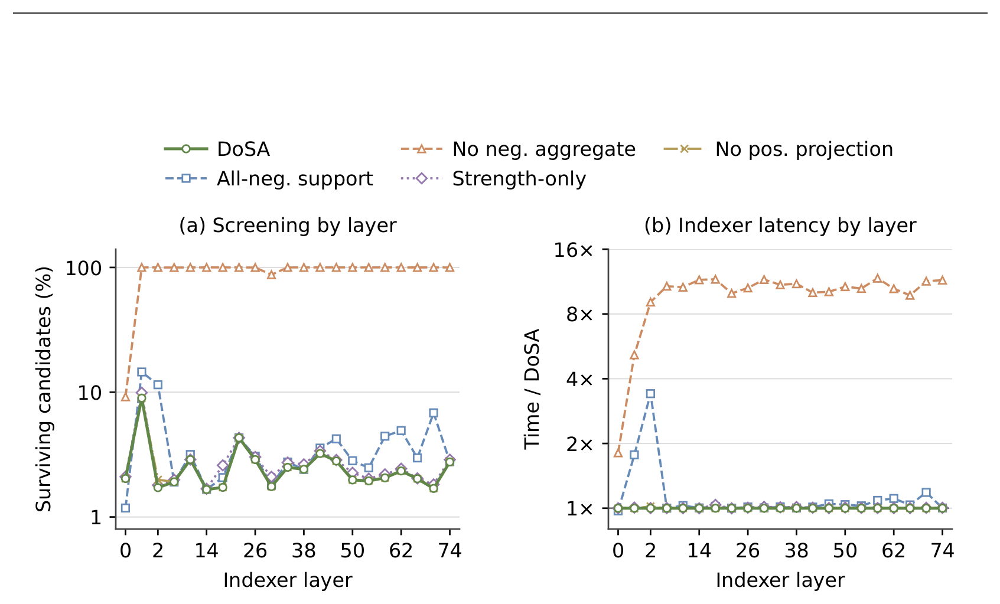
Figure 10: Layer-wise effects of certificate components on candidate survival and Indexer latency. Each layer aggregates the same sample sets. Both vertical axes use logarithmic scales.
Reading note: this is Figure 9 broken out by layer, and both vertical axes are logarithmic — something to keep firmly in mind, or the visual gaps will be badly misread. In the left panel (survival), the "No neg. aggregate" curve hugs the near-100% top edge in most layers, one to two orders of magnitude away from DoSA's 2–3%. The right panel (relative latency) shows a structured phenomenon: the cost of aggregating all negative heads is most pronounced in early layers, reaching 3.41× at layer 2. This dovetails with Figure 6's observation that layer 1 has the lowest pruning rate — early-layer score geometry is simply the hardest to reject against, certificate tightness is most strained there, and any slack gets amplified.Report p.20
6.6 End-to-end TTFT: the gain strengthens with context
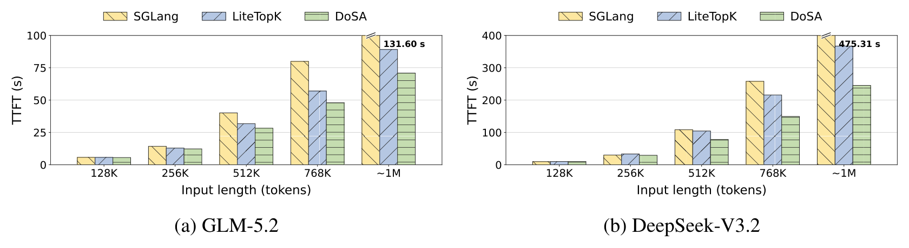
Figure 8: Time to first token across input lengths on (a) GLM-5.2 and (b) DeepSeek-V3.2.
Reading note: note that the two panels use different vertical scales — (a) GLM-5.2 runs 0–100 s and (b) DeepSeek-V3.2 runs 0–400 s — so bar heights cannot be compared across panels. At about 1M tokens, DoSA nearly halves TTFT on both models: 1.86× (GLM-5.2) and 1.94× (DeepSeek-V3.2) over SGLang, and 1.26× and 1.50× over LiteTopK. The annotated 131.60 s and 475.31 s are the baselines' TTFT at 1M. One more detail in panel (a): at 128K/256K the three bars are nearly equal (DoSA's lead is small), and only at 768K–1M does the gap open up clearly — a direct manifestation of the Amdahl effect.Report p.8
The paper uses Amdahl's law to explain why the gain strengthens with length: with indexer time fraction $f$ and indexer speedup $s$, the overall speedup is $S = (1 - f + f/s)^{-1}$. GLM-5.2's $f$ rises from 23.6% at 128K to 73.0% at 1M, and DeepSeek-V3.2 reaches 90.8% at 1M. The larger $f$ is, the bigger the share of request latency that accelerating the indexer can take. The paper also explains why TTFT speedup (1.86×/1.94×) is smaller than Indexer speedup (up to 2.74×): attention layers and feed-forward layers still contribute request latency; the indexer is not everything.
Three conclusions from the experiments chapter:(1) DoSA is the fastest in all 60 microbenchmark configurations, with the advantage growing monotonically with context length, showing the gain comes from cutting work along the "long key dimension"; (2) pruning rates of 97%+ are nearly invariant across languages and modalities, showing this is a property of score geometry rather than of data; (3) the ablations separate three kinds of benefit — arithmetic (screening), bandwidth (sparse writeback), and selection (compact records) — with negative-head aggregation the lifeline the certificate stands or falls on.
07 · Additional Analysis
Additional analysis: per-layer retrieval speed and one engineering disclosure worth reading closely
Appendix D.4 gives a per-layer retrieval-speedup heatmap covering 21 layers × 12 input samples = 252 cells. Its timing scope is "scoring and selection on prepared queries and keys", excluding query/key preparation — a different convention from the microbenchmarks, so watch out when reading.
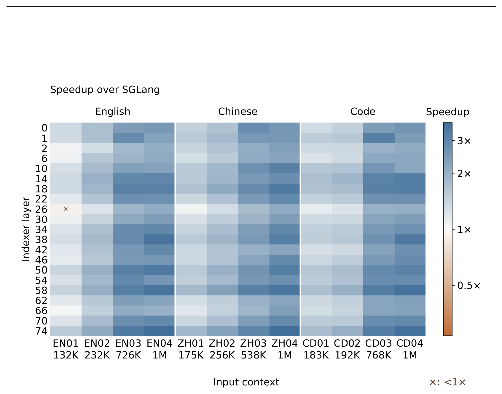
Figure 11: Per-layer retrieval speedup over SGLang for the final 32K queries. Columns identify inputs and context lengths; rows identify indexer layers. Crosses mark cells slower than the baseline. The logarithmic color scale is centered at 1×. Five cells use the capacity-repair remeasurements specified in Appendix D.4.
Reading note: columns are the 12 input samples (English EN01–EN04, Chinese ZH01–ZH04, code CD01–CD04) with their context lengths (132K to 1M), rows are indexer layer numbers, and color is speedup over SGLang, with the logarithmic color scale centered at 1× (so a light cell does not necessarily mean "fast" — read the direction relative to the midpoint). Crosses mark cells slower than the baseline (i.e. <1×). The conclusion: across the measured cells DoSA beats SGLang in 251 of 252 comparisons (99.6%) and LiteTopK in 250/252 (99.2%); every one of the 21 layers reaches 2× or more against SGLang on at least one input, with a maximum of 3.74×, and up to 2.08× over LiteTopK. Those three losing comparisons cost 0.7%–9.0% more latency, and the paper chose to keep them in the figure rather than erase them — a point worth crediting. Overall, every layer's median speedup is above 1× against both baselines.Report p.21
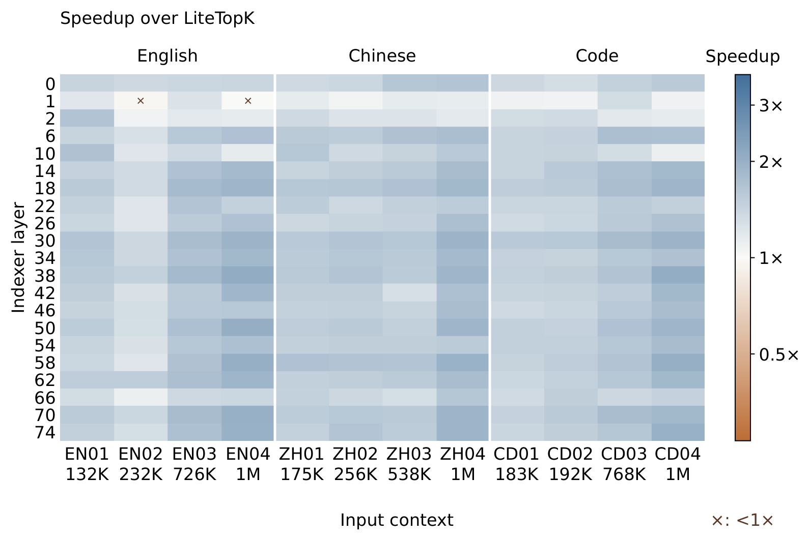
Figure 12: Per-layer retrieval speedup over LiteTopK. Input and layer ordering, timing scope, remeasured cells, and color scale match Figure 11; crosses retain the two comparisons slower than the baseline.
Reading note: same structure, same color scale, and same timing scope as Figure 11, only with the baseline switched to LiteTopK. Its role here is to separate "the benefit of fusion" from "the benefit of certified rejection": a baseline that already fuses scoring and eliminates score writeback and selection input is still beaten by DoSA at a higher rate — from which the paper argues that "avoiding score computation" improves serving latency even after scoring and selection have been fused. Reading the two figures side by side, the overall light/dark pattern changes little, which indicates the advantage is not skewed by one or two input samples.Report p.21
One engineering disclosure worth reading on its own: candidate-storage capacity repair
Appendix D.4 contains a candid "measurement scope" paragraph that carries a lot of information and deserves to be read point by point:
The matrix retains 247 cells from the original run, and after discovering and repairing a candidate-storage capacity problem, five cells were replaced with matched measurements of all three methods: EN01 at layer 26, and EN02, EN04, ZH04, and CD04 at layer 1.
The repair kept the scoring and selection rules, four-anchor initialization, and the 16K internal query scratch unchanged; at about 1M keys of capacity, it reserves 1,024 candidate-ID pages and 114,688 output records per query, adding 9.94 GiB of workspace relative to the original allocation.
The paper states plainly: the full matrix was not rerun after the repair.
This disclosure is the same problem as Appendix C.3's theoretical warning showing up in the measurements: C.3 already pointed out that "a buffer capacity $C_{\text{buf}}$ does not limit how many keys satisfy $U_i \ge \tau$ — if all scores equal $\tau$, every key passes even with exact bounds", and stressed that "dropping overflow candidates can lose required Top-K IDs". In other words, this capacity repair is not tuning; it fixes a correctness problem. It also exposes the method's real space cost: an extra 9.94 GiB of workspace at about 1M keys (the appendix does not give this as a fraction of a GPU's memory, so this page makes no estimate). Together, these are the two threads most worth pulling when judging whether DoSA can go to production.
Two more scope details that are easy to skip but matter:(1) Figure 1's profiling was done with both DoSA and LiteTopK disabled (using real model weights and text), so it characterizes the cost of the original indexer, not DoSA's; (2) Appendix D.1 states explicitly that the indexer interval includes query/key preparation, key-cache access, scoring, and selection, while the denominator is the complete model prefill GPU interval, excluding CPU tokenization and request transport and distinct from TTFT — the paper draws this distinction deliberately, avoiding the common confusion of using a GPU share to explain end-to-end latency. D.1 also notes that 1K = 1,024 tokens, 375K = 384,000 tokens, and about 1M = 1,048,569 tokens, and declares that DeepSeek measurements beyond its declared context support a computational scaling observation, not a claim about task accuracy.
Takeaway from this chapter: the per-layer heatmaps break "fast on average" down into "reliable cell by cell", and honestly leave three losing cells in place; meanwhile the five remeasured candidate-storage cells are the most notable engineering signal in the whole paper — it shows that the certificate's correctness reappears in real systems as "memory capacity", and that this part of the cost is not fully quantified.
08 · Commentary
Commentary: positioning, boundaries, and what deserves follow-up
8.1 What this paper genuinely gets right
First, the problem is well chosen. Between "saving" and "selecting" in sparse attention there has long been a tax that everyone tacitly accepts: to save 99% of the attention computation, you must first spend one full round of dense scoring. The paper quantifies that tax with Figure 1 as a 73.0%/90.8% share of time, and points at the gap between that and the 47.4%/83.2% share of arithmetic — the observation that "time is more expensive than arithmetic" directly determines the design of the next two chapters (not only compute less, but write less and select less). This is not a narrative where the method comes first and the motivation is patched in afterwards.
Second, "lossless" is made a verifiable strong property rather than a vague "approximation". Theorem 1's phrasing is worth learning from: it explicitly distinguishes "returning exactly the same Top-K given a common total order" from "returning a valid Top-K set when no total order is specified", and explicitly notes that "valid tied Top-K sets need not yield identical generated text". Meanwhile both filters in Algorithm 1 retain equality ($U_i \ge \tau$ survives, $s_i \ge \tau$ survives) — a detail that is easy to get wrong in an implementation, and the paper writes it into the algorithm rather than leaving it for the reader to guess. Appendix C goes further, handling "lossless in real arithmetic" and "lossless in FP8" separately and giving a checklist of must-enclose-upward, must-be-conservative-RMS, and must-do-full-domain-recovery — a responsible way of extending a correctness claim from the mathematics to the hardware.
Third, correctness and heuristics are cleanly decoupled. The paper repeatedly stresses that the choice of $R$, the choice of $A$, and the estimate of $p_h$ affect only efficiency, not correctness ("The proof holds for any R"; "The frequencies guide efficiency, not correctness"). The significance is that any tuning for a particular hardware or model cannot break losslessness. By contrast, MISA-style schemes that "screen with fewer heads and rerank with the full indexer" can never recover an already-excluded winner, no matter how good the reranking is — the paper names this irreversibility in one sentence, its sharpest distinction from related work.
Fourth, the ablation answers "why it works", not merely "it works". Figure 9's No-neg.-aggregate variant (survival 2.65% → 95.06%, latency 9.507×) is a highly informative negative result: it nails down, from theory (Proposition 6) to numbers, which of the certificate's three slack terms dominates. And the All-neg.-support variant (survival up to 4.06%, latency +12.0%) verifies the counterintuitive insight that you cannot simply stuff every negative head into the aggregate — and that conclusion is actionable in engineering: activation-frequency statistics are necessary, and they cost one sampling pass.
8.2 Where the techniques come from
DoSA's two technical bloodlines are "upper-bound pruning from document retrieval" and "DSA's signed multihead scoring". Joining them required a fair amount of new machinery. The table below follows the paper's own inline citations:
Where DoSA's components come from (organized from the paper's inline citations; not a table from the paper)
Retrieval-side bounds are block-level (they must cover every key in the block, so they are loose for an individual candidate); DoSA switches to a per-key bound and tightens it using query-head geometry and activation structure
Its definition and parameters are untouched; the certificate must fit the ReLU-inside + signed weights form and provide a strictly non-lower $U_i$
Exact Top-K engineering baseline
Radix selection (Zhang et al., 2023), GVR (Cheng et al., 2026), DeepSelect (Qian et al., 2026), LiteTopK (Yin et al., 2026)
Keeps the "streaming threshold + compact selection" idea, but inserts a layer of certified rejection before it, saving full-head scoring rather than only writeback
Fewer-head screening as an alternative
MISA (Zhou et al., 2026)
MISA screens with fewer heads and optionally reranks with full scores; reranking cannot rescue an excluded winner. DoSA instead proves "whatever was excluded is not a winner"
Mathematical tools for the ReLU reduction
Used by the paper itself in §2.3–2.4: ReLU subadditivity, positive homogeneity, Cauchy–Schwarz, Minkowski's inequality
Combined into five bounding tools, Eqs. (5)(9)(10)(11)(12), plus proofs of the optimal single-anchor allowance (Proposition 5) and the exact slack decomposition (Proposition 6)
Decoding-stage threshold prediction
GVR's temporal correlation (Cheng et al., 2026)
No full predict–verify–refine loop; only borrows "keys selected in recent steps as witnesses" to obtain a conservative threshold lower bound used to compact candidate records
Citations follow the paper's inline attributions; this page has not checked each entry against the bibliography.
8.3 Limitations the paper states itself
Every key is still scanned: "DoSA still scans every key" — what is saved is the per-key full-head scoring, not the scan itself. So if the certificate's preparation cannot be amortized thinly enough, short contexts lose more than they gain.
Short contexts or loose bounds may not pay off: "short contexts or loose bounds can leave insufficient savings to offset screening".
Conservative evaluation is required: numerical guarantees require conservative evaluation relative to the original scorer; valid tied Top-K sets need not yield identical generated text.
Computational benefit is proven; task accuracy is not: "The measurements establish computational benefits, not improved task accuracy beyond a model's trained context."
8.4 Not disclosed, worth testing next
The following are this page's questions after a full read, listed separately from the paper's own stated limitations:
The candidate buffer's memory ledger: Appendix D.4 discloses that the capacity repair adds 9.94 GiB of workspace (at about 1M keys), but does not disclose what fraction of GPU memory that is on the tested card, nor its effect on servable concurrency or maximum context. Since this bears directly on production viability, a memory–latency curve across different $C_{\text{buf}}$ values is worth adding, especially the frequency with which the candidate pool fills and triggers full-domain recovery — the paper only mentions in Figure 9 that timings "include recovery", and never gives the trigger rate.
Tail latency and worst case: the paper reports speedups (median / geometric-mean style), and does not disclose p99 latency or behavior on the worst layer or worst input. Given that Figure 6 shows layer 1 pruning at only 89%–93% (all other layers above 95%), and Appendix D.4 notes four remeasured cells at layer 1, shallow layers are where the system's tail risk lives and deserve a distribution rather than a mean.
Cost and drift of the activation statistics: majority support $A$ depends on seed-key activation frequencies $p_h$. The paper says frequency affects efficiency but not correctness, but does not disclose how many keys must be sampled for stability, the frequency and cost of updating $A$ online, or whether a domain switch requires resampling. If $A$ is sensitive to distribution drift, the hidden cost of per-domain tuning may be underestimated.
Joint tuning of head budget $r$ and $d_a$: the paper gives Eq. (21)'s criterion (an extra head pays off only if it avoids enough full rescoring) and states that in the 32-head implementation $r = 14, 16$ use the absolute-value form while $r = 20$ uses the base form; but it does not disclose a measured comparison table of speedup and survival for those three paths. Since $r$ is the knob that directly determines $r + d_a$ (screening rows per key), that table would be key for both reproduction and tuning.
Independent reproduction and cross-framework consistency: the evaluation rests on the authors' own kernel (flash-indexer) compared against SGLang/LiteTopK; there is no visible third-party reproduction on another inference stack (e.g. vLLM, TensorRT-LLM) or another sparse-attention variant. Moreover, the numerical conditions (Eqs. 26–28) rely on upward-enclosing evaluation and a conservative RMS, and the correctness of such implementations is hard to verify from the paper text alone; a stress test that deliberately injects rounding errors and checks that no winner is lost would be valuable.
A head-to-head against "approximate but faster" methods: the paper positions DoSA as lossless, so its comparison with methods like MISA is at the property level (no guarantee of the original Top-K), not a head-to-head end-to-end speed contest. For users who care only about task accuracy and do not need bit-exact selection, the speed gap between lossless and approximate at equal accuracy is a worthwhile question the paper does not answer.
8.5 One-line assessment
This is an optimization paper that does both the correctness argument and the system implementation properly. Its core idea (certified rejection by separating an upper bound from a lower bound) is not new; what is new and difficult is building a tight yet cheap per-key certificate for the signed ReLU multihead scoring function inside an LLM — positive heads covered by projecting onto already-computed heads, negative heads folded into a single aggregate row along the activation-majority direction, and Proposition 6 splitting the slack into three attributable blocks. Its account of its own boundaries is candid too (every key is still scanned, short contexts may not pay off, computation is proven but accuracy is not, and the full matrix was not rerun after the capacity repair). What will really decide whether it moves from "paper speedup" to "production gain" is probably not the certificate's mathematics but that 9.94 GiB workspace in Appendix D.4: losslessness is more expensive than approximation largely in the places that never show up in the FLOPs.
Glossary
Glossary
Come back here whenever an abbreviation appears; abbreviations in the prose also show their definition on hover.
Reading glossary (abbreviations with a dotted underline in the prose reveal their definition on hover)
Term
Full name
One-line explanation
DoSA
Dots Sparse Attention
The paper's method: certified pruning of DSA's indexer via a score upper-bound certificate, preserving exact Top-K
DSA
DeepSeek Sparse Attention
Scores with a multihead indexer and takes the Top-K to choose which tokens to attend (DeepSeek-AI, 2025)
Indexer
Indexer
The module that decides "which keys to look at"; the target of this paper's optimization
$H$ / $r$
Heads / Retained heads
$H$ is the total number of indexer heads; $r$ is the number of retained heads evaluated exactly, a tunable budget
$K$ / Top-K
Top-K selection
Each query keeps the $K$ highest-scoring keys; $K = 2048$ in the experiments
$\tau$ / $\tau^\ast$
Seed threshold / True threshold
$\tau = \tau_K(S)$ is the lower bound on the true threshold supplied by the seed set; $\tau^\ast$ is the full set's true $K$th largest score
$U_i$
Score upper bound
An upper bound on token $i$'s score; $U_i < \tau$ means certified rejection
$s_i$
Indexer score
The original score defined by Eq. (1); final selection uses only this